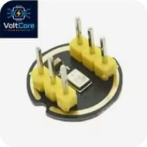
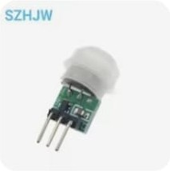
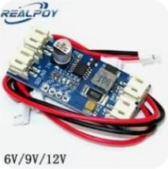
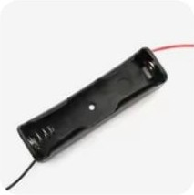

היחידה החיצונית תוכננה ונבדקה בתוכנה בלבד, ועוד לא הורכבה ונבדקה על חומרה אמיתית. ההרכבה הראשונה היא הבדיקה האמיתית. אם משהו מתנהג לא כמו שכתוב כאן, זה צפוי בשלב הזה, ובסוף הדף רשום מה לבדוק.
מה צריך
01החלקים ליחידה
מה צריך
 המיניESP32-C3 SuperMini
המיניESP32-C3 SuperMini
מיקרופוןINMP441
חיישן תנועה קטןAM312
לוח טעינה סולאריCN3791
בית סוללה וסוללה18650 פאנל סולארי6V 2W
פאנל סולארי6V 2W חוטים עם חור בשני הקצוותנקבה-נקבה
חוטים עם חור בשני הקצוותנקבה-נקבה
ועוד כמה דברים שכבר יש לך: 2 מחברי WAGO קטנים (3 פינים), הקופסה המודפסת (חלקים 08, 09, 10), 2 אזיקונים, וכבל USB-C שמעביר נתונים (לא רק טעינה).
למה צריך 2 מחברי WAGO קטנים?
למיני יש רק פין 3V3 אחד ופין GND אחד, ושניהם צריכים להאכיל גם את המיקרופון וגם את חיישן התנועה. ה-WAGO מפצל כל פין לכמה חוטים, בלי הלחמה.
צריבת התוכנה
02מתקינים תוכנה למיני
מוציאים את סוללת ה-18650 מבית הסוללה. אסור לחבר USB למיני כשהסוללה בפנים.
מחברים את המיני בכבל USB-C למחשב.
אם לא מופיעה יציאה חדשה במחשב: מחזיקים את כפתור BOOT על המיני, מחברים את הכבל, ומשחררים.
לוחצים על הכפתור כאן בדף, בוחרים את היציאה ולוחצים Connect.
בוחרים Install. בהתקנה ראשונה מסמנים Erase. מחכים בערך 2 דקות, עד Installation complete.
ולמה לא צריך להגדיר וויי-פיי?
המיני לא מתחבר לרשת הביתית בכלל. הוא משדר אירועים ישירות למתקן (ESP-NOW), בלי נתב, בלי סיסמה ובלי הגדרות אחרי הצריבה.
✓ בדיקה: בסוף הצריבה מופיע Installation complete. רק אחרי שמנתקים מהמחשב מחזירים את הסוללה.
חיווט
03חמישה חוטים, בלי הלחמה
עובדים בלי חשמל: הסוללה בחוץ והפאנל מנותק עד שכל החוטים במקום.
החשמל למיני מגיע מלוח הטעינה לפין 5V. לא לפין 3V3, זה עלול לצרוב את הלוח.
כבל מאיפה לאן צבע 32 הפאנל הסולארי + / − לוח הטעינה, SOLAR דרך האטםאדום / שחור 33 בית הסוללה + / − לוח הטעינה, BAT+ / BAT− אדום / שחור 34 לוח הטעינה, יציאה OUT+ / OUT− המיני, 5V / GND 5V, לא 3V3!אדום / שחור חבר את המיקרופון:
כבל מאיפה לאן צבע 35 מיקרופון SCK / WS / SD המיני, GPIO 4 / 5 / 6 צהוב / ירוק / כחול 35 מיקרופון VDD המיני, 3V3 דרך ה-WAGO הקטןכתום 35 מיקרופון L/R ו-GND המיני, GND דרך ה-WAGO הקטןשחור חבר את חיישן התנועה:
כבל מאיפה לאן צבע 36 חיישן OUT המיני, GPIO 3 לבן 36 חיישן + המיני, 3V3 דרך ה-WAGO הקטןכתום 36 חיישן − המיני, GND דרך ה-WAGO הקטןשחור את כל החלקים והסגירה של הקופסה, עם תמונות ותלת־מימד, יש בפרק היחידה החיצונית במדריך ההרכבה.
לפרק היחידה החיצונית במדריך
למה החיישן והמיקרופון על 3.3V?
שניהם רכיבי 3.3V. חיבור ל-5V שורף אותם. רק החשמל הראשי של המיני עצמו נכנס לפין 5V.
✓ בדיקה: אף חוט לא רופף, וכל החוטים האדומים והשחורים במקום הנכון.
חשמל ומיקום
04שמש, סוללה ומקום
השרשרת: הפאנל טוען את הסוללה דרך לוח הטעינה, והסוללה מפעילה את המיני.
הפאנל פונה לשמש, בזווית 45° (אפשר גם 15 / 30 / 60).
קושרים את הקופסה למעקה או למוט עם 2 אזיקונים דרך התעלות בגב. רוח חזקה יכולה להפיל אותה.
מומלץ לצפות את 3 החלקים המודפסים של הקופסה (08, 09, 10) בלכה שקופה נגד UV או בצבע לבן. פלסטיק PETG מתיישן לאטו בשמש.
כמה זמן הסוללה מחזיקה?
אם המיקרופון מקשיב כל הזמן, הוא שותה 60–80 מיליאמפר: מספיק ליום-יום רק אם הפאנל מקבל שמש מלאה כמעט כל היום. אם המרפסת מוצלת, עדיף להפעיל את המיני מ-USB קבוע, או לעבור למצב חיישן-תנועה בלבד (שינה עמוקה), שמחזיק על סולארי בלי הגבלת זמן.
בדיקה ותקלות
05שהכל מדבר
אחרי שהמיני מורכב ומופעל: באפליקציה של המתקן, למעלה, "בדיקת חיבורים". אחת הבדיקות שם מחכה לאירועים מהיחידה החיצונית.
מרעישים בחוץ או זזים מול החיישן, ורואים שהמתקן קולט.
היחידה שקטה (אין אירועים יותר מ-2 דקות)
בודקים שהסוללה טעונה ושהנוריות בלוח הטעינה דולקות. אם הכל נראה טוב, יכול להיות אי-התאמה בקוד האבטחה (TOKEN) בין המיני למתקן.
חיישן התנועה מזנק שוב ושוב
ענפים זזים, שמש ישירה על החיישן או פליטת מזגן מול היחידה. משנים זווית או מקום.
✓ בדיקה: בדיקת החיבורים של המתקן מראה אירועים מהחוץ.